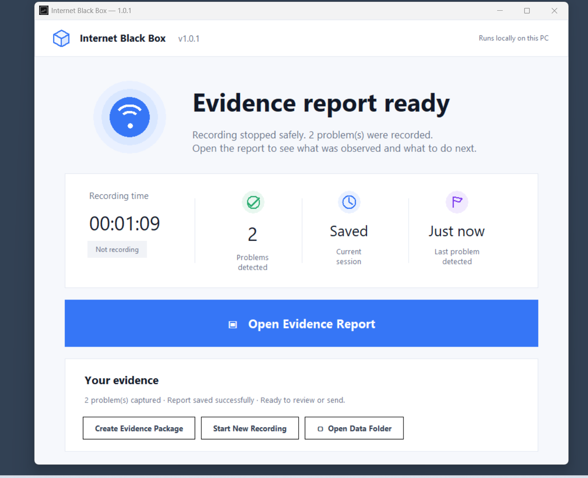

Your internet keeps dropping?Don't lose the evidence next time.
Internet Black Box quietly monitors your Windows PC and records connectivity problems while they happen — so you have something to review when the problem disappears again.

Does this sound familiar?
Intermittent problems are easy to feel and surprisingly hard to explain after they disappear.
The problem shows up when it wants to.
Wi-Fi, router, browser — maybe all of it.
By the time you check, the connection is back.
And now you have to explain what vanished.
Start it. Then forget about it.
No dashboard babysitting. Leave IBB running and come back when there is something worth reviewing.
Start recording
Run Internet Black Box before the next problem happens.
Use your PC normally
No dashboard watching required.
IBB catches the problem
Connectivity observations are recorded with timestamps.
Evidence ready
Review what happened after the connection recovers.
Problem captured. Evidence ready.
You don't need to watch the connection fail. Internet Black Box keeps the record for you.
The product isn't another dashboard.
It's the evidence.
IBB organizes observable connectivity conditions into a report designed to be reviewed later — including timestamps, incident duration and supporting technical observations.
Local gateway became unreachable during the event and responded again when the event closed. The report avoids making an unsupported ISP-fault claim.
WHAT THE REPORT CAN SHOW
- When the problem happened
- How long it lasted
- Local connectivity observations
- Gateway observations
- External connectivity observations
- Recovery
- Technical evidence
You shouldn't need to become a network expert.
No log hunting
Don't dig through thousands of Windows events after every disconnect.
No dashboard watching
You shouldn't have to stare at charts waiting for the problem.
No networking degree required
IBB turns connectivity observations into a report designed to be reviewed later.
A black box for your connection — not your private life.
The product is designed around connectivity observations, not personal content.
Evidence first. No unsupported blame.
Internet Black Box records connectivity observations. It does not automatically prove that your ISP, router, Wi-Fi adapter, DNS provider, or another party caused an incident.
Simple answers before you buy.
What does Internet Black Box record?
Connectivity observations such as local gateway reachability, external connectivity checks, DNS/TCP diagnostic observations, timestamps and detected incident states.
Does it record my browsing activity?
No. IBB is not designed to record browsing history, screen contents, camera or microphone data.
Does it need to stay open?
Start recording and leave IBB running while you use the PC normally. You do not need to watch the dashboard.
What happens when my internet disconnects?
IBB continues preserving available connectivity observations and organizes detected incidents for later review when the connection recovers.
Can I send the report to my ISP?
Yes. The report is designed to be readable and shareable with technical support. Whether a provider accepts it for a particular dispute or process is up to that provider.
Does IBB prove my ISP caused the problem?
No. It records observations and evidence quality. It deliberately avoids claiming legal responsibility or unsupported ISP fault.
Which Windows versions are supported?
Internet Black Box V1.0.1 is offered for Windows 10 and Windows 11 PCs.
Is this a subscription?
No. The current V1.0.1 offer is a $9.99 one-time purchase.
Where does my data go?
IBB runs locally on your PC and stores its evidence data locally. Optional active performance tests contact a public test service when you explicitly run them.
Ready for the next outage?
Don't let the next problem disappear without a record. Start IBB, use your PC normally, and review the evidence afterward.